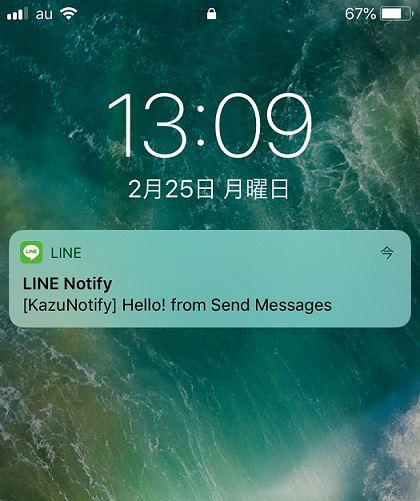
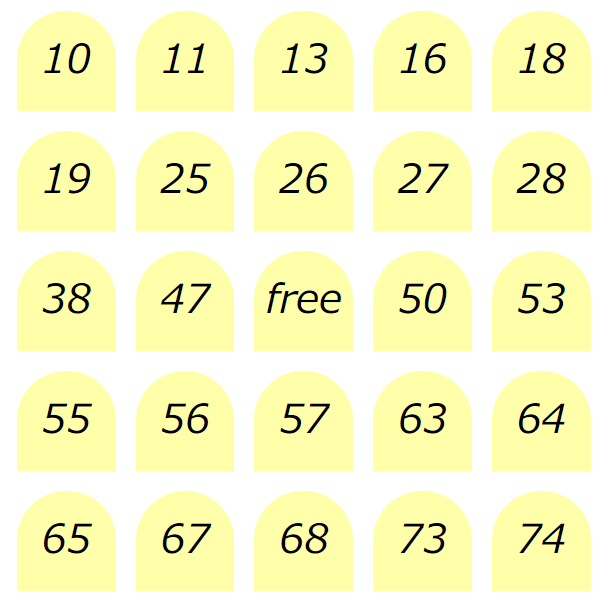

このページでは自分が過去に作った作品などの紹介を行っていきます！
Todo Management

らーめんろぐ

Djangoで開発したラーメンのレビューを投稿し共有するアプリ。
残念ながらスマホに対応していないなどの問題を抱えてはいるが、アカウントの作成など、一連の機能を搭載。
このアプリを使ってみる
Send Messages to LINE

LINEに通知を送るサービスであるLINE Notifyを利用して、LINEを開かずともメッセージを送ることができるアプリ。
LINEがインストールされていないPC等でURLをスマホに送りたいときなどに有効。
このアプリを使ってみる
BINGO now!!

ビンゴ大会やりたいけどビンゴカードがない!!そんな悩みを解決するのがこのアプリ。
みんなでワイワイビンゴを楽しみましょう!
注意
・再読み込みで値が変わるのでゲーム中は誤って押さないように!
・画面のサイズに合わせてウィンドウを調節してください！
このアプリを使ってみる